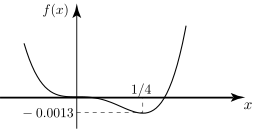

Long description: workbook132fig13

Alt text: A graph showing a function, labeled \(f(x)\), that is concave up, crosses the x-axis at a negative value, reaches a local minimum, and then increases as \(x\) approaches one-fourth.
This description was generated by AI and has not been verified by a human. If you spot an error, please use the feedback link below.
- The graph displays a curve representing the function \(f(x)\) on a Cartesian coordinate system with \(x\) on the horizontal axis and \(f(x)\) on the vertical axis.
- The curve appears to be a parabola or a similar U-shaped function that opens upwards, although it exhibits a distinct local minimum.
- The x-axis has labeled points, showing markers near \(-0.0013\) and \(1/4\).
- The function's curve passes through or approaches the x-axis at a point to the left of the y-axis, and it crosses the x-axis again further to the right, near the mark \(1/4\).
- There is a dashed horizontal line segment drawn below the x-axis, positioned near the center of the graph's visible range, suggesting a possible line of interest or reference value.
- The overall shape of the visible portion of the graph shows the function decreasing from the left, reaching a local minimum, and then increasing as \(x\) increases towards the value of \(1/4\).